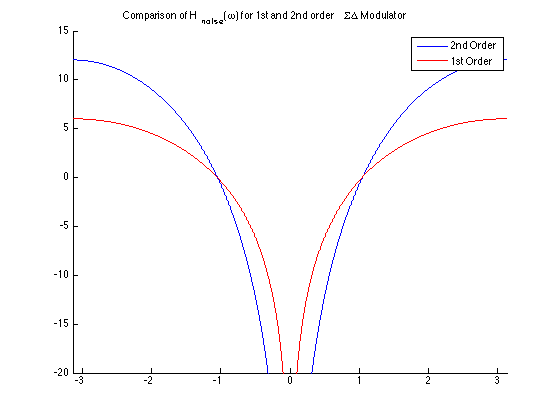

Homework 6.20
w = -pi:0.001:pi; Hn_order2 = 1 - 2*exp(-1i*w)+ exp(1i*-2*w); Hn_order1 = 1 - 1*exp(-1i*w); figure; hold on; plot(w, 20*log10(abs(Hn_order2))) plot(w, 20*log10(abs(Hn_order1)), 'r') title('Comparison of H_n_o_i_s_e(\omega) for 1st and 2nd order \Sigma\Delta Modulator') legend('2nd Order', '1st Order'); axis([-pi pi -20 15])